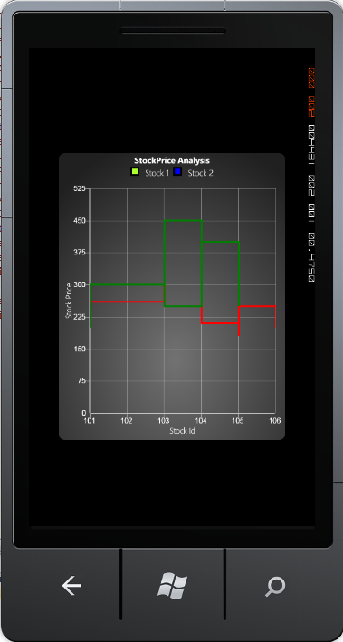

Kagi charts are a Japanese invention and datesback to the late 1870's, but were popularized in the western world by Steven Nison. They contain a series of connecting vertical lines where the thickness and direction of those lines depend on price. If closing prices continue to move in the direction of the prior vertical Kagi line, then that line is extended. However, if the closing price reverses by a pre-determined "reversal" amount, a new Kagi line is drawn in the next column in the opposite direction.
The Reversal amount can be customized by using the ReversalAmount attached property. By default, the Green and Red color can be used for the chart series. The PriceUp color is rendered as Green and PriceDown color is rendered as Red.
The following code example illustrates how to create a Kagi Chart.
|
[XAML]
<syncfusion:ChartSeries Type="Kagi" Label="Stock 1" Interior="GreenYellow" Stroke="Black" StrokeThickness="3" DataSource="{StaticResource data1}" BindingPathX="StockId" BindingPathsY="MaxStockPrice, MinStockPrice, OpenPrice, ClosePrice, PurchasePrice"> </syncfusion:ChartSeries>
<syncfusion:ChartSeries Type="Kagi" Label="Stock 2" Interior="Blue" Stroke="Black" StrokeThickness="3" DataSource="{StaticResource data2}" BindingPathX="StockId" BindingPathsY="MaxStockPrice, MinStockPrice, OpenPrice, ClosePrice, PurchasePrice"> </syncfusion:ChartSeries>
|
|
[C#]
ChartArea area = new ChartArea();
// Creating Kagi Chart. ChartSeries series = new ChartSeries(); series.Type = ChartTypes.Kagi;
// Initializing chart data. series.DataSource = this.Resources["data1"] as StockInfoData; series.BindingPathX = "StockDate"; series.BindingPathsY = new List<string>() { "High", "Low" };
area.Series.Add(series); |

Figure 49 : Kagi Chart